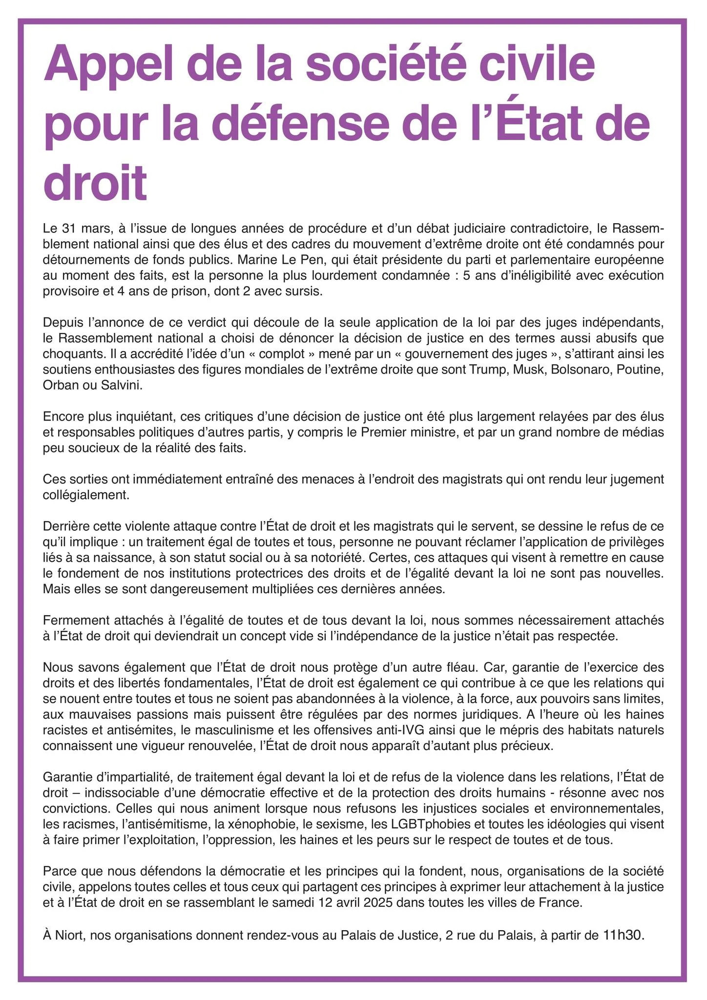

Appel archivé
À Niort, rassemblement pour la démocratie et l’État de droit le 12 avril
Date indiquée par Facebook · 11 avril 2025
Repères éditoriaux
Nous avons relayé l’appel des associations et syndicats en défense de l’État de droit. L’affiche niortaise donnait rendez-vous le samedi 12 avril à 11 h 30 devant le palais de justice.
Texte conservé avec la publication
Mobilisation pour la défense de la démocratie et l’État de droit.
Plusieurs associations et syndicats, dont la CGT, SOS Racisme et la Ligue des droits de l'homme, appellent à manifester un peu partout en France le 12 avril 2025.
A NIORT - 11h30 - 2 rue du Palais devant le Palais de Justice

Sources
Archive rouge · export Facebook · AR-0002-FB-01147
À lire aussi · À Niort le 12 avril, un rassemblement pour défendre l’État de droit